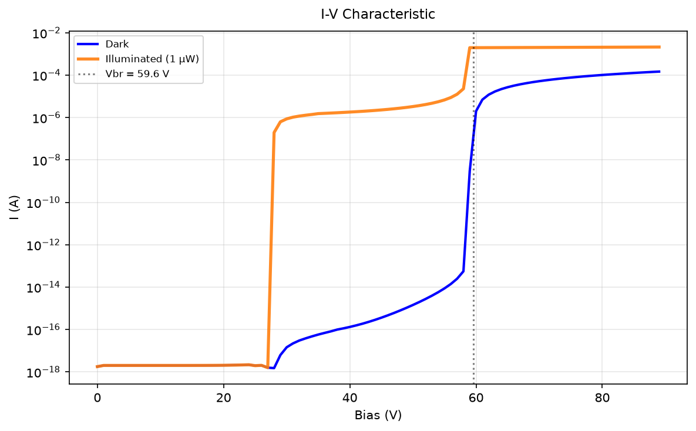
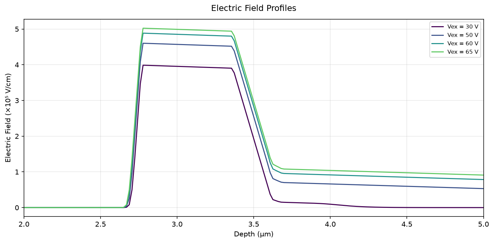
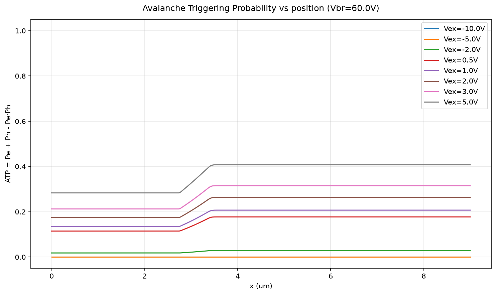
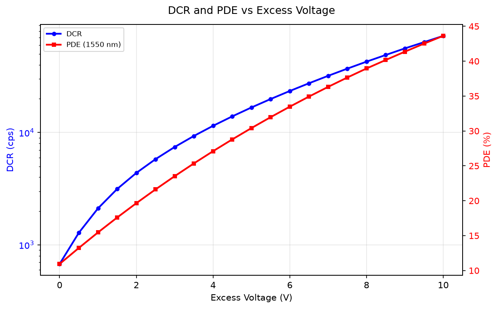
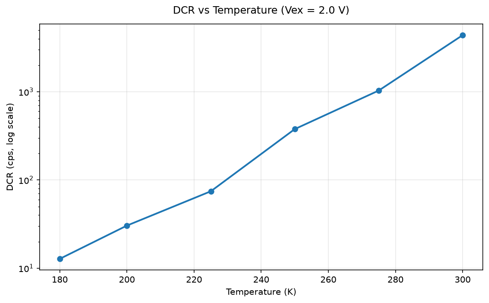
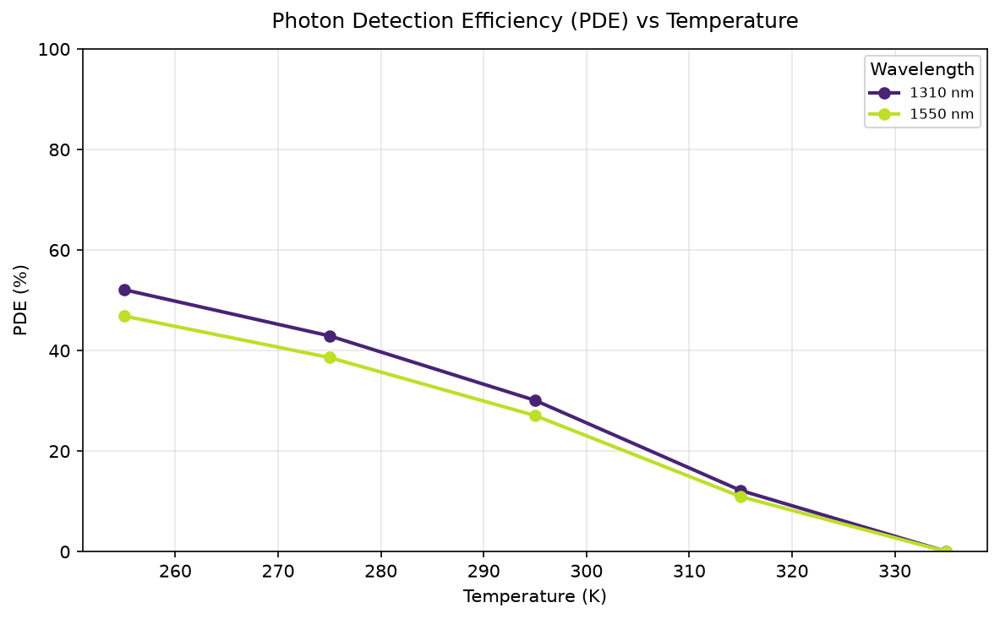
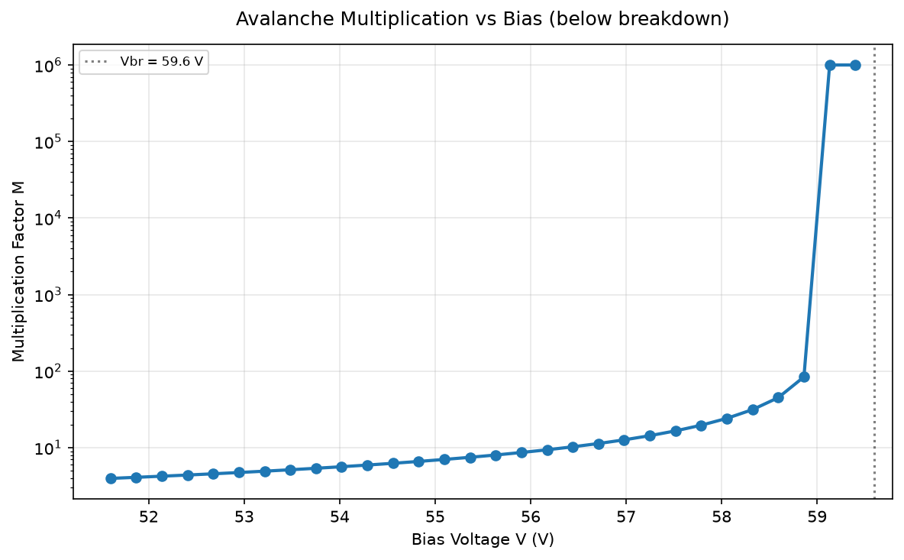

1D SAGCM SPAD Simulator
Summer internship report — PI: Prof. Rajendra Singh Guide: Dr. Pawan Kumar Supervisor: Dr. Smita Srivastava
This report documents a fully-coupled 1D Poisson–drift-diffusion simulator for InGaAs/InP SAGCM SPADs. The simulator self-consistently solves nonlinear electrostatics, Van Overstraeten–de Man impact ionization with dead-space correction, avalanche triggering statistics, dark current (SRH/BTBT/TAT), photon detection probability, and a PIC loop with circuit quenching — using composition-dependent material parameters with complete literature citations.
The long-term goal is to evolve this into a 3D SPAD simulator capable of modelling afterpulsing and timing jitter — physical effects that current TCAD tools do not address.
Chapter 1: Semiconductors for Photodetection
1.1 Silicon — The Starting Point
Silicon is the workhorse of electronics and the first semiconductor used for photodetection. Its key properties:
| Property | Value | Implication |
|---|---|---|
| Bandgap $E_g$ | 1.12 eV | Cutoff wavelength $\lambda_c = 1240/1.12 \approx 1100$ nm |
| Crystal structure | Diamond cubic | Mature, cheap fabrication |
| Native oxide | $\text{SiO}_2$ (excellent) | Enables MOS technology |
| Electron mobility | 1350 cm²/V·s | Moderate speed |
Indirect Bandgap
Silicon has an indirect bandgap: the conduction band minimum and valence band maximum occur at different crystal momenta ($k$-vectors). An electron transitioning across the gap requires a phonon to conserve momentum, making radiative recombination unlikely. This is:
- Not a problem for detectors — absorption still works (phonon-assisted transitions are slower but sufficient for photogeneration; Si photodiodes are ubiquitous).
- A fundamental limitation for emitters — light-emitting diodes and lasers need efficient radiative recombination, which the indirect gap suppresses. Si LEDs have $\ll 1\%$ efficiency.
Despite this, detector-wise Si works well at visible/near-IR wavelengths. We move to III-V materials not because Si is a bad detector, but because we need sensitivity at telecom wavelengths (1310/1550 nm) beyond Si's band edge, and InGaAs/InP offer superior noise, speed, and bandgap engineering via heterostructures.
1.2 Why III-V Semiconductors?
III-V compounds (elements from groups III and V of the periodic table) offer:
- Tunable bandgap — by alloying GaAs with InAs, we can cover 0.35–2.5 eV
- Direct bandgap — strong optical absorption (unlike silicon's indirect gap)
- High electron mobility — faster carrier transport
- Lattice matching — certain compositions share the same crystal lattice constant, enabling epitaxial growth of heterostructures
1.3 InGaAs and InP — The Telecom Materials
InGaAs (In$_{0.53}$Ga$_{0.47}$As)
- Absorbs strongly from 1000–1700 nm — covers both telecom windows (1310 nm and 1550 nm)
- High absorption coefficient: $\alpha \sim 10^4$ cm$^{-1}$ — a 1.5 μm layer absorbs >95% of 1310 nm light
- Direct bandgap → efficient photogeneration
InP (Indium Phosphide)
- Transparent at 1310/1550 nm — used as the window and multiplication layer
- Excellent breakdown properties — high ionization threshold, low noise
- Lattice matched to InGaAs at $a = 5.8687$ Å — enables defect-free epitaxial growth
Chapter 2: Avalanche Photodiode (APD) Theory
2.1 The I-V Characteristic
An APD is a p-n junction operated in reverse bias. The current has several regimes:

Figure 2: I-V characteristic showing dark current (blue) and illuminated current (orange) vs reverse bias.
- Low reverse bias ($V \ll V_{BR}$): Small dark current from thermal generation. Photocurrent is roughly constant (one electron-hole pair per absorbed photon).
- Mid reverse bias: Depletion region widens. Dark current increases slowly. Still no multiplication.
- Punch-through ($V = V_{PT}$): The depletion region reaches through the absorber to the multiplication-region edge. Beyond this voltage, photo-generated carriers from the absorber begin to experience the high field and can impact-ionize. The photocurrent rises because collection efficiency increases — carriers that were previously recombining in the neutral absorber now get swept into the multiplication region. Punch-through is not breakdown; it is the voltage at which the absorber becomes fully depleted.
- Near breakdown ($V \to V_{BR}$): Impact ionization begins. Carriers gain enough energy to create secondary pairs. Current starts rising exponentially.
- At breakdown ($V = V_{BR}$): Gain $M \to \infty$. A single carrier triggers a self-sustaining avalanche. This is the Geiger mode used in SPADs.
2.2 Multiplication and Gain
When a carrier (electron or hole) travels through the high-field multiplication region, it can impact-ionize:
The multiplication factor $M$ is the average number of electron-hole pairs produced by one injected carrier. It is computed from the McIntyre integral:
where the inner integral runs from $x$ to $W$ (the multiplication-region edge) and the outer integral covers the full device. The denominator represents the positive feedback loop — when it approaches zero, the gain diverges and the device reaches breakdown.
An equivalent form (used in the breakdown voltage search) swaps $\alpha$ and $\beta$:
Both formulas give identical results by integration by parts.
2.3 Excess Noise Factor
Avalanche multiplication is a statistical process — the gain fluctuates from event to event. The excess noise factor $F(M)$ quantifies this:
| $k_{\text{eff}}$ | Noise | Material |
|---|---|---|
| $k = 1$ | Worst: $F = 2M - 1$ | Si (if both carriers ionized equally) |
| $k = 0$ | Best: $F = 2$ | Asymmetric ionization |
| $k \approx 0.4$ | Moderate | InP (our material) |
2.4 Quantum Efficiency
The external quantum efficiency (EQE) is the probability that an incident photon produces a measurable electron-hole pair:
- $(1 - R)$: Surface reflection loss ($R \approx 0.3$ for uncoated InP)
- $1 - e^{-\alpha L}$: Absorption probability in the InGaAs layer
- $\eta_{\text{collection}}$: Probability that photo-generated carriers reach the multiplication region
The photodetection probability (PDP) adds the trigger probability:
Chapter 3: Single-Photon Avalanche Diodes
3.1 Why Move from APD to SPAD?
| Feature | APD (Linear Mode) | SPAD (Geiger Mode) |
|---|---|---|
| Bias | $V < V_{BR}$ | $V > V_{BR}$ (overbias) |
| Gain | Finite ($M \sim 10$–$100$) | Effectively infinite (self-sustaining) |
| Output | Analog current $\propto$ optical power | Digital pulse (avalanche or no avalanche) |
| Sensitivity | ~nW | Single photon |
| Timing | Limited by RC, transit time | Sub-ns jitter possible |
| Circuit | Transimpedance amplifier | Quench circuit (active or passive) |
3.2 SPAD Architectures
SAM — Separate Absorption and Multiplication
- Structure: InGaAs absorber + InP multiplier, no charge sheet
- Problem: The electric field extends into the absorber, causing tunneling dark current
- Use: Simple but limited performance
SAGCM — Separate Absorption, Grading, Charge, Multiplication
- Structure: Adds a grading layer (InGaAsP) and a charge sheet (n+ InP)
- Grading layer: Smooths the valence band discontinuity at InP/InGaAs interface — prevents carrier trapping
- Charge sheet: Controls the field distribution — high field in InP (for multiplication), low field in InGaAs (reduces tunneling)
- This is our architecture
SACM — Separate Absorption, Charge, Multiplication
- Similar to SAGCM but without the grading layer
- Valence band barrier causes hole trapping → afterpulsing
Reach-Through
- Depletion region extends from multiplication all the way through absorber to contact
- Good collection efficiency but harder to control field profile
3.3 Our SAGCM SPAD
Our device (data/device_sagcm.xml) has 7 layers:
| # | Material | Thickness | Doping | Role |
|---|---|---|---|---|
| 0 | InP | 2.5 μm | p+ $2\times10^{18}$ | Cap / p-contact |
| 1 | InP | 0.5 μm | i (intrinsic) | Multiplication region |
| 2 | InP | 0.2 μm | n+ $10^{17}$ | Charge sheet (field control) |
| 3 | InGaAsP | 0.12 μm | i | Grading layer |
| 4 | InGaAs | 1.5 μm | i | Absorber |
| 5 | InP | 0.5 μm | n+ $5\times10^{16}$ | Buffer |
| 6 | InP | 2.0 μm | n+ $10^{18}$ | Substrate / n-contact |
Chapter 4: Physics Models in the Simulator
4.1 Poisson Solver
Starting from Gauss's law in differential form:
where $\mathbf{D} = \varepsilon \mathbf{E}$ is the electric displacement field and $\mathbf{E} = -\nabla\phi$ is the electrostatic potential. Substituting:
In 1D this simplifies to:
The net charge density includes free carriers and ionized dopants:
Substituting gives the full nonlinear Poisson equation:
Carrier densities couple to potential via Boltzmann statistics:
The nonlinearity (exponential $n,p$ dependence on $\phi$) is solved with Newton–Raphson iteration on a uniform 500-node grid. Voltage is ramped from 0 to $V_{\text{bias}}$ in 2V steps, using the previous solution as the initial guess for the next step.
Residual Discretization
At interior node $i$, the residual $F_i$ is the finite-volume discretization (cell-centre differences with dielectric averaging at interfaces):
where $\varepsilon_{i\pm\frac12} = \frac12(\varepsilon_i + \varepsilon_{i\pm1})$ handles heterojunctions. Boundary nodes enforce Dirichlet contact potentials: $\phi(0) = \phi_0(V_{\text{bias}})$, $\phi(L) = \phi_L(V_{\text{bias}})$.
Newton–Raphson Linearization
At each iteration $k$, we solve $J(\phi^k) \cdot \delta = -F(\phi^k)$ for the correction $\delta$, then update $\phi^{k+1} = \phi^k + \alpha\,\delta$ (damped). The Jacobian $J = \partial F / \partial \phi$ is tridiagonal:
The charge derivative $\partial\rho/\partial\phi$ couples carrier statistics into the system matrix:
Boundary rows: $J_{0,0} = J_{N-1,N-1} = 1$.
Tridiagonal Solve
The Jacobian is stored as three diagonals (sub-diagonal $d_l$, main diagonal $d$, super-diagonal $d_u$) and solved with LAPACK's banded solver via scipy.linalg.solve_banded. The $(1,1)$ banded form packs the matrix as:
Damped Iteration
- Assemble residual $F(\phi^k)$ and Jacobian $J(\phi^k)$
- Solve $J\cdot\delta = -F$ via banded solve
- Clip $\delta$ to $\pm 50\,\text{V}$ for stability
- Armijo line search: try $\alpha = 1.0$, halve until $\|F(\phi + \alpha\delta)\| < \|F(\phi)\|$
- Convergence when $\|F\|_\infty < 5 \times 10^{-4}$
- Fail after 300 iterations →
ConvergenceError
Initial Guess
Before Newton iterations, a smooth step-like potential is constructed:
- Depletion approximation for $V_{\text{bias}} < V_{bi}$: $\phi(x) = \phi_0 + (\phi_L - \phi_0) \cdot \frac12[1 + \tanh((x - x_J)/\sigma)]$ where $x_J$ is the metallurgical junction and $\sigma \approx W_{\text{dep}}/3$.
- Sigmoid for $V_{\text{bias}} \ge V_{bi}$: wider transition ($\sigma = L/8$) to avoid overshoot.
- The previous bias-step solution serves as the guess for the next step (voltage ramp).
4.2 Impact Ionization
Two classes of model are available. The Van Overstraeten–de Man model is the default for InP based on user-provided parameters fitted to experimental data. The Okuto-Crowell model is available as an alternative (commented out in materials XML).
Van Overstraeten–de Man (Default)
Two-regime Chynoweth form. Parameters (300 K reference, InP):
| Carrier | $A_{\text{low}}$ | $B_{\text{low}}$ | $A_{\text{high}}$ | $B_{\text{high}}$ | $E_0$ | $\hbar\omega$ |
|---|---|---|---|---|---|---|
| Electron | $1.12\times10^7$ | $3.11\times10^6$ | $2.93\times10^6$ | $2.64\times10^6$ | $3.85\times10^5$ | 0.063 eV |
| Hole | $4.79\times10^6$ | $2.55\times10^6$ | $1.62\times10^6$ | $2.11\times10^6$ |
Temperature dependence via optical phonon scaling:
This ensures $dV_{BR}/dT > 0$: higher temperature → shorter mean free path → higher field needed for ionization.
Effective Ionization with Dead Space
A newly born carrier needs a distance $l_d = E_{th} / q|E|$ to gain threshold energy before it can ionize. The effective ionization coefficient accounts for this:
These enter the trigger and multiplication integrals, suppressing ionization in the first few mean-free-paths after each impact.
Okuto-Crowell (Alternative)
Temperature enters via $\lambda(T) = \lambda_0 \tanh(\hbar\omega / 2k_BT)$. Available by uncommenting the OC blocks in data/materials.xml.
4.3 Trigger Probability (McIntyre–Oldham–Hayat)
Given $\alpha(x)$ and $\beta(x)$, the trigger probability is the chance that a single carrier initiates a self-sustaining avalanche. The simulator solves the coupled McIntyre ODEs (Oldham–Hayat formulation):
The term $P_{\text{tr}} = P_e + P_h - P_e P_h$ is the joint probability that at least one secondary carrier triggers — it captures the positive feedback loop: holes create electrons, which create more holes.
Numerical Solution
The ODEs are not integrated directly. Instead, they are transformed to integral form and solved via fixed-point iteration with damping ($\alpha_{\text{damp}} = 0.2$):
Starting from a linear ramp guess, each iteration recomputes $P_{\text{tr}}$ from the latest $P_e, P_h$, then updates via the integral formulas. Convergence to $10^{-8}$ tolerance typically takes ~50 iterations.
Dead-Space Correction
A newly ionized carrier cannot re-ionize until it travels a distance $l_{\text{dead}}(x) = E_{th} / q|E(x)|$ to gain threshold energy. This is incorporated by shifting the trigger probability in the integrand by the dead-space length:
Physically: a secondary electron born at $x'$ can only contribute to the feedback loop after drifting $l_e(x')$ downstream. The interp1d evaluation of $P_{\text{tr}}$ at the shifted position $(x' \pm l_{\text{dead}})$ implements this delay. If the dead space pushes the evaluation beyond the device boundary, it returns 0 (no contribution).
Multiplication Solver
In addition to trigger probabilities, the simulator computes the mean multiplication factor $M$ via a separate coupled-ODE system (electrons $M_n$, holes $M_p$):
This is a linear two-point boundary value problem solved with scipy.integrate.solve_bvp. $M = M_n(0)$ is the net gain for electron injection from the left contact, capped at $10^6$ near exact breakdown.
Breakdown Detection
The trigger solver itself only computes probabilities — it does not detect breakdown. The breakdown voltage is found by sweeping bias and evaluating the McIntyre integral for $M$:
Breakdown is declared at the first bias where $M$ exceeds a threshold ($M > 100$, equivalent to the gain at which a single carrier produces a detectable current pulse). The integral uses dead-space-corrected effective coefficients $\alpha_{\text{eff}} = \alpha / (1 + \alpha \cdot l_{\text{dead}})$.
4.4 Dark Current Components
Dark current flows even without illumination and determines the dark count rate (DCR). Three physical mechanisms contribute:
| Component | Formula | Physics |
|---|---|---|
| SRH | $J_{\text{SRH}} = q \cdot n_i / (2\tau)$ | Thermal generation via mid-gap traps in the depletion region. The intrinsic carrier density $n_i(T) = \sqrt{N_c N_v}\, e^{-E_g/2k_BT}$ depends exponentially on temperature via the Varshni bandgap. |
| BTBT | $J_{\text{BTBT}} = A F^2 e^{-B E_g^{3/2}/F}$ | Band-to-band tunneling at high field (Kane model). Dominant in the multiplication region near breakdown. |
| TAT | $J_{\text{TAT}} = \dfrac{A F^2 N_T e^{-(B_1 E_{B1}^{3/2} + B_2 E_{B2}^{3/2})/F}}{N_v e^{-B_1 E_{B1}^{3/2}/F} + N_c e^{-B_2 E_{B2}^{3/2}/F}}$ | Trap-assisted tunneling (Hurkx model) — an intermediate mechanism: a carrier thermally emits to a trap, then tunnels through the remaining barrier. |
Each generation rate is integrated over the device volume and multiplied by the trigger probability to get the DCR:
where $P_{\text{trigger}} = P_e + P_h - P_e P_h$ is the combined trigger probability. Carriers generated in the dead zone (where $P_{\text{trigger}} \approx 0$) do not contribute.
The temperature dependence enters through $n_i(T)$ (via Varshni $E_g(T) = E_{g,0} - \alpha T^2/(T+\beta)$) and through the field-dependent tunneling terms. At 300 K, the simulation yields DCR $\approx 4,\!340$ cps at $V_{ex} = 3$ V, with BTBT as the dominant component.
4.5 Photon Detection Probability
PDP combines absorption, dead-zone transmission, and trigger probability:
4.6 Carrier Transport
Drift-diffusion with field-dependent mobility (Caughey–Thomas) and velocity saturation:
Diffusion follows the Einstein relation with a high-field enhancement:
Carrier position is updated via a stochastic Wiener process: $x_{\text{new}} = x + v_d\,dt + \sqrt{2D\,dt}\cdot\xi$ where $\xi \sim \mathcal{N}(0,1)$.
4.7 Self-Consistent PIC Loop
The particle-in-cell (PIC) loop couples carrier dynamics, the Poisson field, and the external quench circuit to simulate a complete avalanche event from seed to quench:
Components
| Component | Role |
|---|---|
| ParticleMesh | Deposits carrier charges onto the grid via cloud-in-cell (CIC) weighting, and interpolates the field back to particle positions. |
| CircuitSolver | Models the SPAD bias circuit: $V_{\text{spad}} = V_{\text{supply}} - I \cdot R_q$, where $R_q$ is the quench resistor. As avalanche current grows, the voltage drop across $R_q$ reduces $V_{\text{spad}}$ below $V_{BR}$, quenching the avalanche. |
Loop
- Deposit carrier charges onto grid (CIC weighting) → add to Poisson RHS as $\rho_{\text{ext}}$
- Solve Poisson with $\rho_{\text{ext}}$ → updated $\phi(x)$, $E(x)$
- Move each carrier via drift-diffusion using the local field
- Sample impact ionization: $P_{\text{ion}} = 1 - e^{-\alpha_{\text{eff}} \cdot \Delta x}$ for each carrier after its dead space
- On ionization: spawn new e-h pair at the same position
- Update circuit: $V_{\text{bias}}^{k+1} = V_{\text{supply}} - I^k R_q$
- Repeat until $V_{\text{spad}} < V_{BR}$ (quenched) or carrier count drops to zero
The PIC loop captures the full self-limiting dynamics missed by steady-state models — how the avalanche builds up, fills the multiplication region with plasma, and extinguishes as the bias collapses.
Chapter 5: Simulation Results
5.0 Configuration Files
The simulator is driven by three XML configuration files, also available from this site:
data/device_sagcm.xml— Layer stack, doping, thickness, griddata/materials.xml— Material parameters (bandgap, mobility, DOS, lifetime, Auger, etc.) with source citationsdata/plots_config.xml— Which diagnostic plots to generate (7 enabled by default)
All plots are generated at runtime by make run and saved to plots/spad/.
5.1 Electric Field Profile

Figure 5: Electric field $|E(x)|$ at different reverse biases. The charge sheet (n+ InP) creates a sharp field drop, keeping the absorber field low ($< 10^5$ V/cm) while the multiplication region sees high field ($> 4\times10^5$ V/cm).
5.2 Average Trigger Probability

Figure 6: Average trigger probability $P_{\text{tr}}(x) = P_e + P_h - P_e P_h$ across the device at different excess biases. The high-field multiplication region dominates.
5.3 Current-Voltage Characteristic
Figure 7: Dark and illuminated I-V curves. The sharp current rise at $V_{BR}$ marks the transition to Geiger mode.
5.4 DCR and PDE vs Excess Bias

Figure 8: Dark count rate and photon detection probability vs excess bias. Both increase with $V_{ex}$ as the trigger probability saturates.
5.5 DCR vs Temperature

Figure 9: Dark count rate at $V_{ex}=3$ V as a function of temperature. The exponential rise follows $n_i(T) \propto \exp(-E_g/2k_BT)$.
5.6 PDE vs Temperature

Figure 10: Photon detection efficiency at fixed bias $V_{bias}=V_{br}+3$ V as a function of temperature. PDE decreases at higher $T$ because the breakdown voltage rises, reducing the effective excess bias.
5.7 Multiplication vs Excess Bias

Figure 11: Avalanche multiplication factor $M$ vs excess bias. $M$ diverges as $V_{ex} \to 0$ (i.e., $V \to V_{BR}$). The $M > 100$ threshold defines the breakdown criterion.